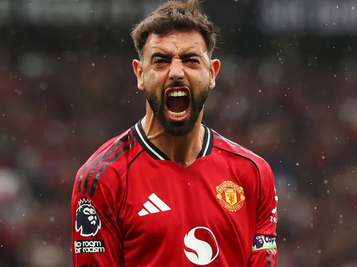
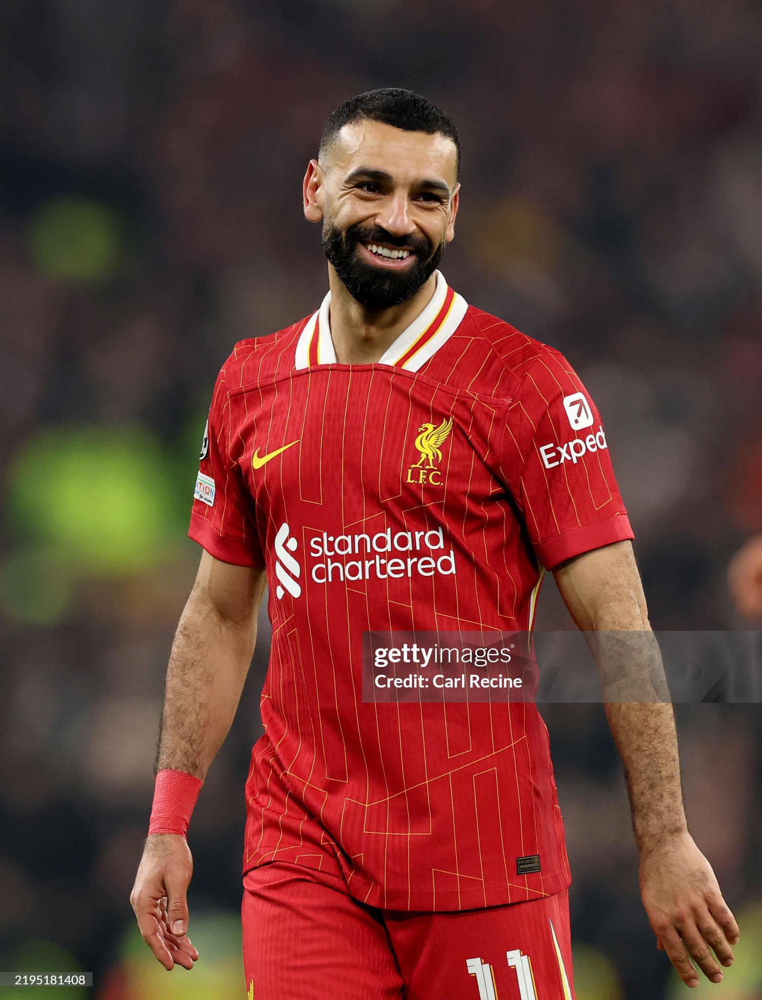
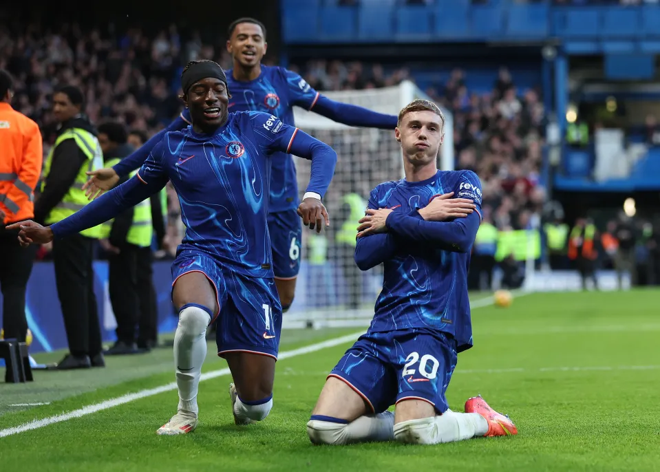
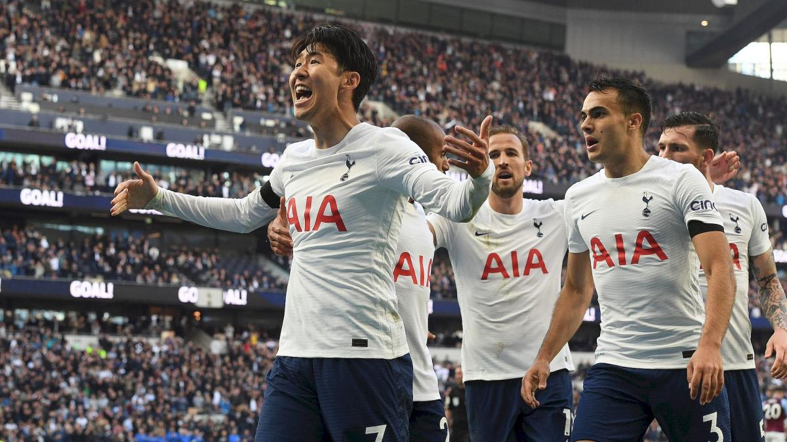

PREMIER LEAGUE
Experience the passion,glory, and excitement of football
Experience the passion,glory, and excitement of football

Arsenal FC recently concluded a historic campaign by winning the 2025–26 Premier League title, ending a 22-year wait to secure their first league trophy since the iconic 2003–04 "Invincibles" season. Managed by Mikel Arteta, the Gunners claimed the championship with a game to spare, finishing at the top of the table with 85 point.
.jpg)
The official first-team squad for Manchester City F.C. includes world-class talents like Erling Haaland, Phil Foden, and Rodri. Following a heavy rebuilding phase under sporting director Hugo Viana, the roster features high-profile updates alongside its core stars.

Manchester United F.C. finished 3rd in the 2025/26 Premier League season with 71 points, successfully securing a return to the UEFA Champions League under manager Michael Carrick. Following the conclusion of their domestic campaign with a 3–0 away victory over Brighton, the club is actively rebuilding its squad for the upcoming season while advancing massive infrastructural plans.

Liverpool Football Club is a professional football club based in Liverpool, England, that competes in the Premier League, the top tier of English football. Following a 5th-place finish in the 2025–26 season and the departure of head coach Arne Slot, the club enters a new era under manager Andoni Iraola.

Chelsea Football Club is a prominent English professional football club based in Fulham, West London. Founded in 1905, the Blues play their home matches at the historic Stamford Bridge stadium and compete in the English Premier League.

Tottenham Hotspur Football Club narrowly avoided a historic relegation from the top flight, finishing 17th in the Premier League for the 2025–26 season. Under head coach Roberto De Zerbi, who took over mid-season to rescue the club, Spurs are undergoing a massive summer rebuild ahead of the 2026/27 campaign.